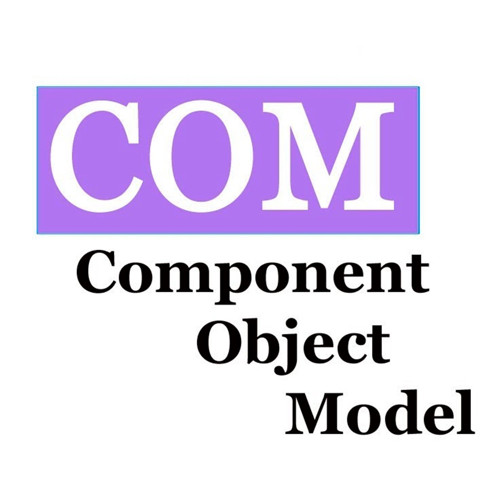

Navigating the COM Object Tree¶
To automate UniSim Design, Python needs a way to talk to it. Because they are completely different software programs, they cannot share memory directly.
Instead, they communicate using the Microsoft Component Object Model (COM).
How COM Works¶

COM is a binary interoperability standard. It allows software components written in different languages to interact without needing to know each other's internal code.
In COM, you never manipulate the raw memory of the target application. Instead, the target application (UniSim) exposes "objects." These objects provide sets of methods (functions you can call, like .Open()) and properties (values you can read or write, like .Temperature).
To make this work in Python, this framework uses the pywin32 library. It acts as a bridge, handling the complex, low-level allocation of pointers and data types. It lets you treat UniSim's COM objects as if they were normal Python objects.
The Root Object¶
Everything starts by asking the Windows operating system for a running (or new) instance of UniSim:
import win32com.client as winclt
# Grab the application object
unisim = winclt.Dispatch("UnisimDesign.Application")
# Open a specific case
case = unisim.SimulationCases.Open(r"C:\path\to\your\case.usc")
From this root object, you can navigate down the tree into the flowsheet, the operations, the streams, and the solver.
Finding Object Values¶
Because COM objects are dynamic, your code editor won't always know what methods and properties exist. You discover them at runtime using Python's built-in dir() function.
If you want to know what equipment is present in the simulation, you can ask the Flowsheet object for the names of all its Operations:
for name in Simulation.case.Flowsheet.Operations.Names:
print(f'{name, Simulation.case.Flowsheet.Operations[name].TypeName}')
# or you can use the built-in function
Simulation.get_all_operations()
If you want to know what properties a specific object has, pass it to dir():
Subflowsheets¶
Large simulations are often organized into subflowsheets.
Subflowsheets are not stored in the main Flowsheet.Operations list. They are stored in their own collection on the Flowsheet object.
To see a list of all subflowsheets in a case:
To access the equipment inside a subflowsheet, you have to navigate down into it first:
# Get the subflowsheet object
sub_flow = Simulation.case.Flowsheet.Flowsheets.Item('SubFlowsheet1')
# Now you can access its operations and streams
for name in sub_flow.Operations.Names:
print(name)
Config on setup.py
you must explicitly list the names of any subflowsheets you want to search in the SUBFLOWSHEETS list
See Also¶
Microsoft COM Technical Overview — A classic introduction to the architecture that powers this framework.
COM Fundamentals — COM underlying architecture
pywin32 Documentation — The Python package that makes the COM connection possible.